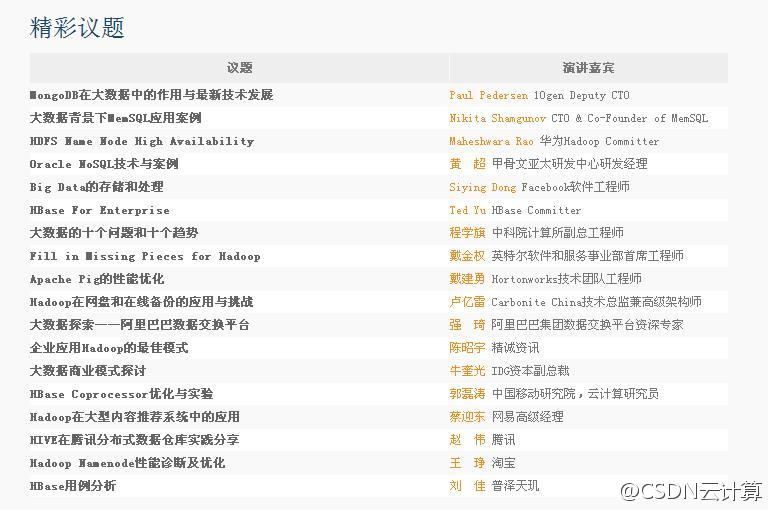

从@滕召智 拍的选56M照片中，选了40张，压缩了下，上传到ITEYE的OpenStack群组，，网页链接 群组里照片是网上报名参加活动的人都可以上传的。@滕召智:南京大学的秋天很不错。#openstack中国行# 感谢各位赴约，照片很大，正在上传到服务器，到时提供下载 @Adela可爱多 @ben_杜玉杰 @少年振南 @ubuntu_motu @且行且歌 记得抽时间发给我其他的 :)
ITEYE首页网页链接 推荐了两个开源云计算群组，OpenStack和CloudStack, 点击首页图片就可进入。 接下来要看看有没有在做Eucalyptus和OpenNebula的国内技术人员，条件成熟的，CSDN可以协助建立对应技术社区。感兴趣的可以联系我。
按Eucalyptus关键字订阅Google Alert上的新闻时，常常一多半真是关于桉树这种木本植物的新闻，而不是云计算领域的桉树公司，即使用“-”过滤，也很难得到精确搜索结果。连CEO Marten都认为这个公司名字起得不好，容易混淆，而且难读难认。
移动端产品越来越多了。@CSDN:好消息！我们开发了CSDN Share文档阅读应用，内含CSDN 2012年技术活动讲师PPT集合。立即下载！马上拥有MDCC、SDCC、OpenStack大会，以及TUP、CMDN、CTO等官方活动讲义。心动不如行动！ CSDN官方下载地址：网页链接 ，还可通过第三方下载：google play、应用汇、机锋。
最后一轮召集了，这周五周六还有谁要去参会？网页链接@CSDN云计算:【技术为王，HBTC 2012重磅公布40位讲师及议题】11月30日-12月1日，中国IT界技术盛会——Hadoop与大数据技术大会将在京举行。目前，Hadoop生态系统，大数据行业应用，NoSQL、NewSQL、SQL与大数据，大数据共享平台与实践四大议题已经确定，首批40位演讲嘉宾及议题首次对外公布。@Hadoop中国 